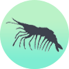
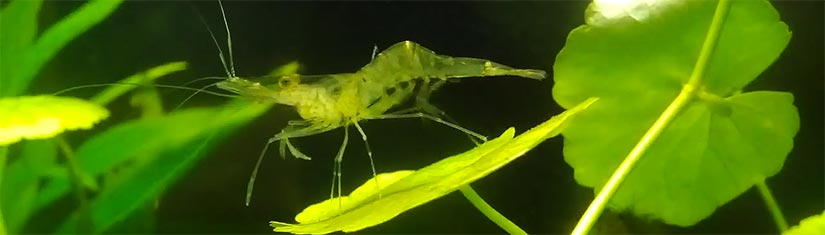
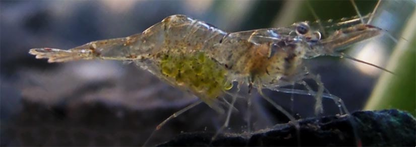
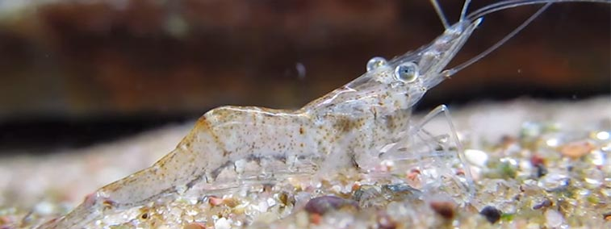

Ghost Shrimp Care
CARING & BREEDING FOR GHOST SHRIMP (GLASS SHRIMP)
Ghost Shrimp, also called Glass Shrimp are one of the easiest species of freshwater shrimp to keep. They are primarily translucent, small and highly active. Ghost shrimp are extremely popular due to their low price. Ghost shrimp can often be purchased en mass for as little as 20-50 cents each. This price makes them attractive to prospective owners but also as a live feeder for larger carnivorous fish. Ghost Shrimp are scavengers and do an excellent job of cleaning the aquarium of rotting debris and algae. They are effective at actively reducing nitrates within the aquarium and having a very low biomass footprint.

Ghost Shrimp are extremely hardy and condition tolerant when directly compared to other varieties of shrimp such as Crystal Red Shrimp and Red Cherry Shrimp. For this reason they are the best beginner shrimp to trial before moving on to more expensive varieties. They are easy to breed and maintain. Ghost Shrimp will consume almost any type of food. They are also effective scavengers. Ghost shrimp are tolerant but are still sensitive to water fluctuations. Water chemistry should be kept stable when housing Ghost Shrimp. If they begin to look unwell in the aquarium immediately check the water temperature and recent additives.

Temperature ~75°F
- The optimum aquarium temperature for Ghost Shrimp is around 65-85°F (18-29°C). Ghost shrimp can tolerate temperatures as low as 65°F. Ghost shrimp are best kept around 75°F in a tropical aquarium. Higher temperatures will lead to faster growth and reproduction rates. However higher temperatures reduces dissolved oxygen and stocking will need to be lowered. 85°F (30°C) is the upper limit tolerated by Ghost Shrimp. At low temperatures Ghost Shrimp are more susceptible to disease.
pH ~7
- Ghost Shrimp pH can be variable from 6.5 – 8.0. A neutral range will maximize health, color and hatching rates of Ghost Shrimp eggs. Neutral tap water is perfect for water changes.

Nitrite 0ppm
- Before adding any Ghost Shrimp to the aquarium ensure nitrite is 0. Cycle the tank and check the levels with a test kit. Ghost Shrimp are highly sensitive to nitrite.

Ammonia 0ppm
- Ammonia should always be 0 post cycling. Ghost Shrimp are sensitive to elevated ammonia levels.

Nitrate >20ppm
- Nitrates should be less than 20ppm. It is not a requirement but it is highly encouraged to have nitrate levels of 0ppm. More water changes and plants can help keep nitrates lower.

Water Changes 30%
- The aquarium water should be changed at least 30% every week. Use a spare glass heater to bring the changed water up to the aquariums temperature. This will reduce shock on the Ghost Shrimp during water change.


Adding the Ghost Shrimp
- Ghost Shrimp can be kept in aquariums larger than 5 gallons. It is recommended to keep them in a species only aquarium. Ghost shrimp are small and defenseless, easily harassed and consumed by larger fish. Ensure the aquarium has been chemically tested and it is within the parameters listed above before adding the shrimp.
- Add the Ghost Shrimp from the plastic bag to a bowl. Use air-line tubing and a rubber band to create a siphon from the aquarium. Kink the tubing by placing the rubber band over a bent section of the tube. Adjust the kink to allow a slow drip of 1 drop of water per second exiting the tube. Let this drip into the bowl for the next 20-30 minutes and monitor carefully.
- After 20-30 minutes use a soft mesh net to transfer the Ghost Shrimp into the aquarium. Cover the net with one hand when moving the shrimp as they can jump and escape.
- Ghost Shrimp are hardy but can be affected by poor water quality. If a situation does arise check the water immediately. Perform a water change and try to identify the problem. If you have more than one aquarium move the Ghost Shrimp to a suitable temporary home. Even if the conditions are sub-optimal is often far better than leaving them in a toxic aquarium.
- Here is a link to a full guide to setting up a shrimp tank. Including setup instructions, cycling and choosing the correct hardscape in much greater detail.

Feeding Ghost Shrimp
- Ghost Shrimp are scavenger feeders and will accept a wide variety of foods. They are omnivorous and will naturally feed on brush algae and fallen food.
- Ghost Shrimp can be fed processed foods such as flakes & pellets. They are typically unfussy eaters. Ghost shrimp have a unique clear body, the food can be seen making its way through the digestive system. Ghost Shrimp will also eat boiled zucchini and soft vegetables. Vegetables provide the shrimp with necessary nutrients and are a low cost solution.

Ghost Shrimp as live feeders
- Ghost shrimp can be purposefully bred to feed to aquarium fish. Larger freshwater species including Oscars, Arowanas, Cichlids, Angelfish, Discus and Trigger Fish will benefit. Ghost shrimp are high in natural oils and fats, beneficial for coloration and development.
- Ghost Shrimp have much lower risk of carrying disease than other live feeder species. Feeder fish and blood worms can carry harmful parasites while Ghost shrimp are exempt as invertebrates.
- A separate aquarium should be set up to breed the Ghost Shrimp. Ghost Shrimp breed readily and can be farmed to be a sustainable weekly meal for the display tank. Further reading regarding breeding can be found below.


Tank mates & Compatibility
- Ghost Shrimp are best kept in a species only aquarium or with other very small shrimp species. They breed quickly, are fairly hardy and interact well with their own species. They lack proper defenses to be housed with larger fish and are often used as live feeders.
- Ghost Shrimp must be kept away from fish such as Discus, Oscars, Cichlids, Arowanas and Angel Fish. Tetra's and other smaller fish can pose a risk to younger fry and harass smaller shrimp.
- Adult varieties are often kept with small fish. They can be extremely productive in the aquarium, reducing nitrates and removing excess algae. It is recommended to have a strong starting population of at least 20 when housed with fish. This is due to a safety in numbers argument. The Ghost Shrimp will have adequate time to feed and rest without being targeted.

How Many Ghost Shrimp can be Kept in the Aquarium?
- Ghost Shrimp have an extremely low biomass and ecological footprint. They produce very little waste and aid in the reduction of nitrates. For this reason there is a soft cap of 10 shrimp per gallon of tank water. Careful note should be taken of temperature and water conditions in highly stocked tanks. High temperatures can increase reproduction rates but will lower the dissolved oxygen content of the water. Plants can aid in oxygenation and shelter.
- It is recommended to use an air filter with Ghost Shrimp. The young are small and weaker swimmers than the adults. Slower water currents are preferred by all ages of Ghost Shrimp.

Breeding Ghost Shrimp
- Ghost Shrimp are easy to breed. Ensure the tank is stocked with both males and females. Females are much larger than males, usually about 1.5x the length. It is optimal to have twice as many females as males.
- Choosing specific ratios may not be possible when purchasing. In this case purchase at least 20 to ensure a healthy mix of both male and females.
- Raise the temperature in the aquarium to around 80°F. Raising the temperature can help simulate warmer months (and therefore wetter months) of the year. Water changes can also help contribute to breeding behavior. Higher temperatures increase metabolism and will help breeding activity in the Ghost Shrimp.
- It is important to fill your tank with patches of thick plant cover. This will give the Ghost Shrimp piece of mind and safety needed for breeding. Raising the relative hardness of the water can spur breeding. Harder water signals to Ghost Shrimp higher calcium and mineral levels necessary for maturation of eggs. This can be obtained by adding a small bag of limestone chips to the filter.
- Within one to two weeks females will be noticeable with rows of hundreds of eggs beneath their tails. Ghost shrimp will constantly fan the eggs to ensure they remain oxygenated and healthy. Ensure the tank is using an air filter at this point. Ghost Shrimp fry are small and fragile.
- Sometimes the Ghost Shrimp become pregnant but there are never any young. In this case check three parameters. The calcium is at appropriate levels in the tank. Too elevated can lead to impermeable shells. Too low can lead to soft development. Ensure the temperature is around 80°F, this is necessary to encourage birth. Relax the Ghost Shrimp with plant and artificial cover.
- Ghost Shrimp fry are born live from the mother. The eggs will be carried for around 1 to two weeks. Immediately after being born the fry must fend for themselves. It is wise to move them to a fry-only tank. Ghost Shrimp are scavengers and will often eat their own young.